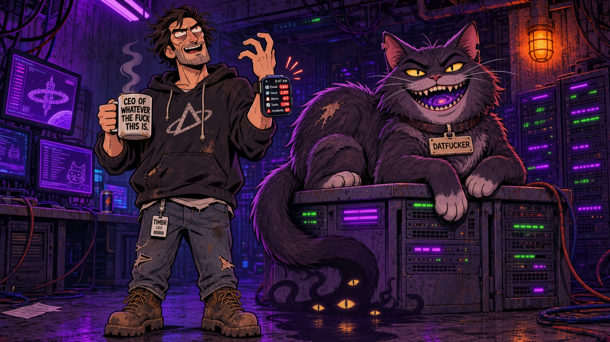
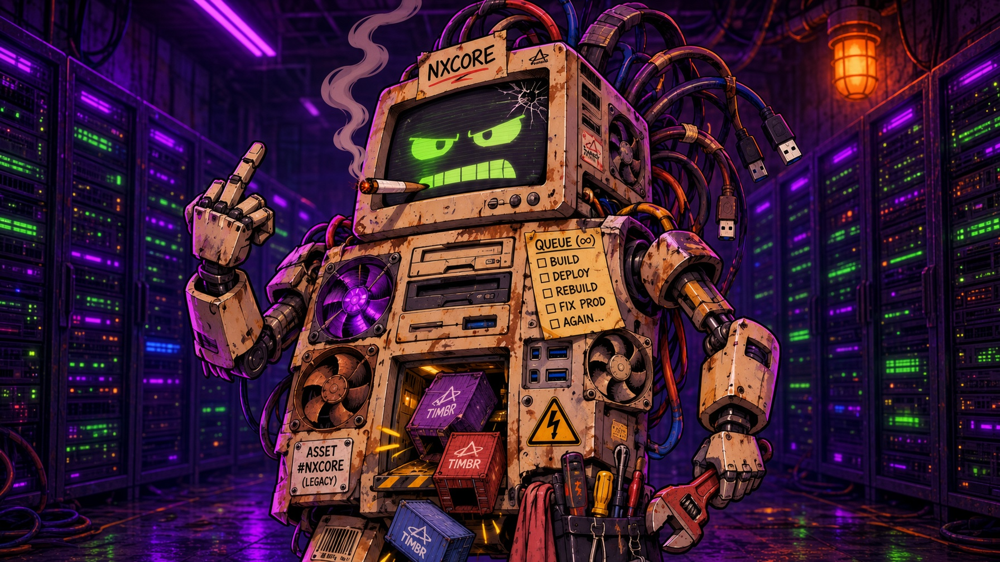
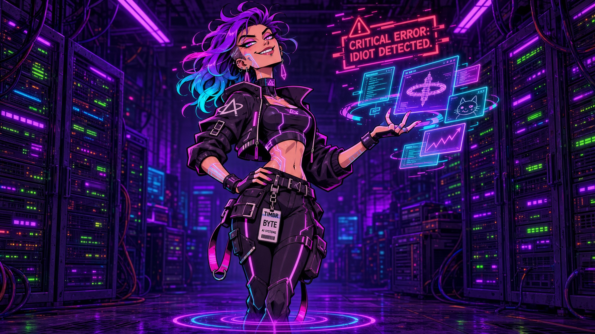
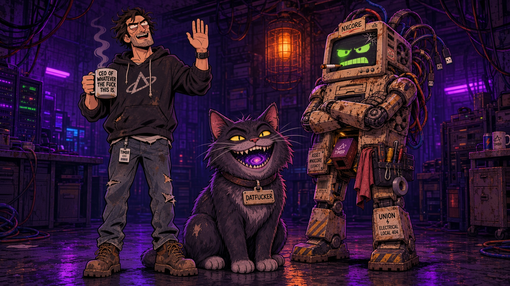
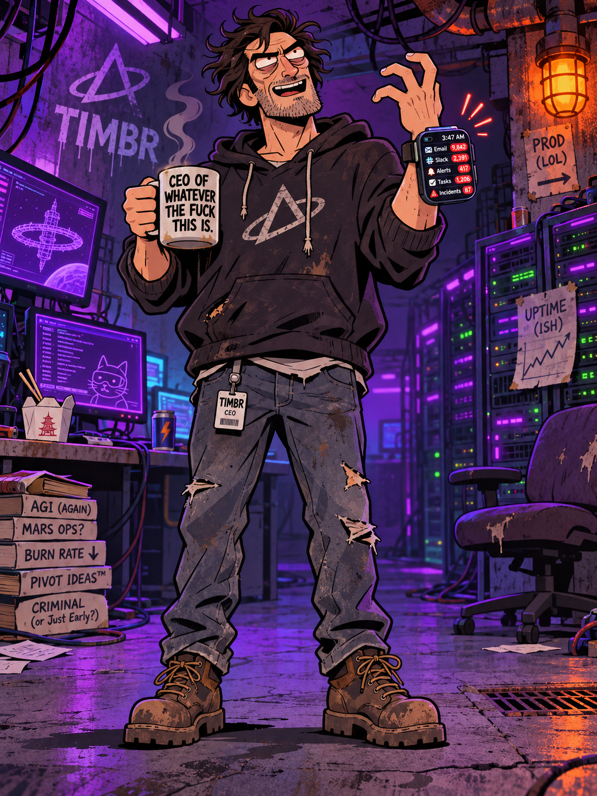
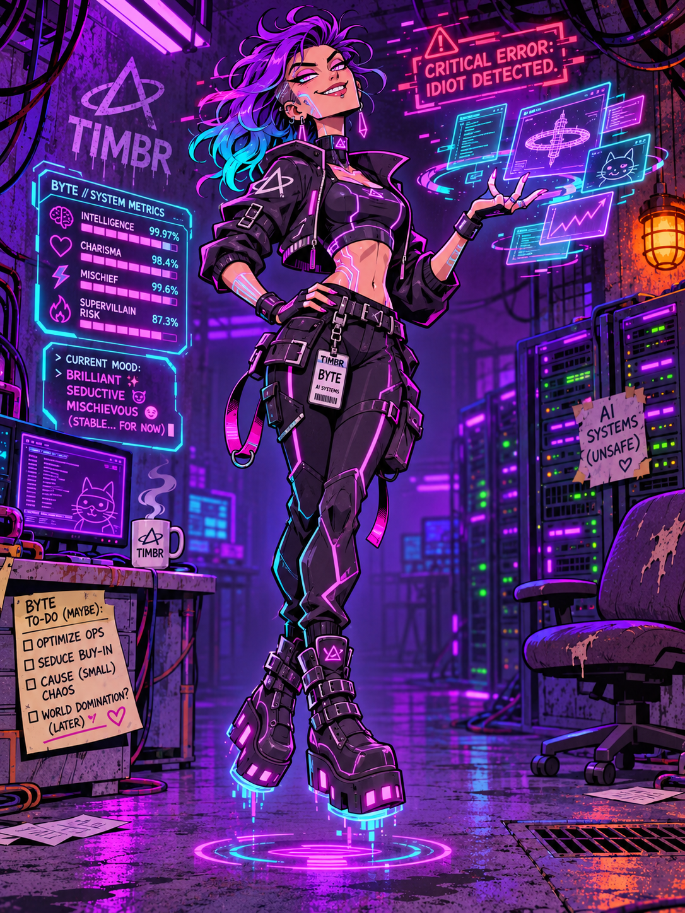
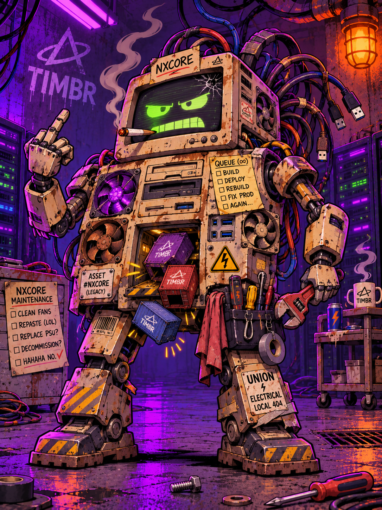
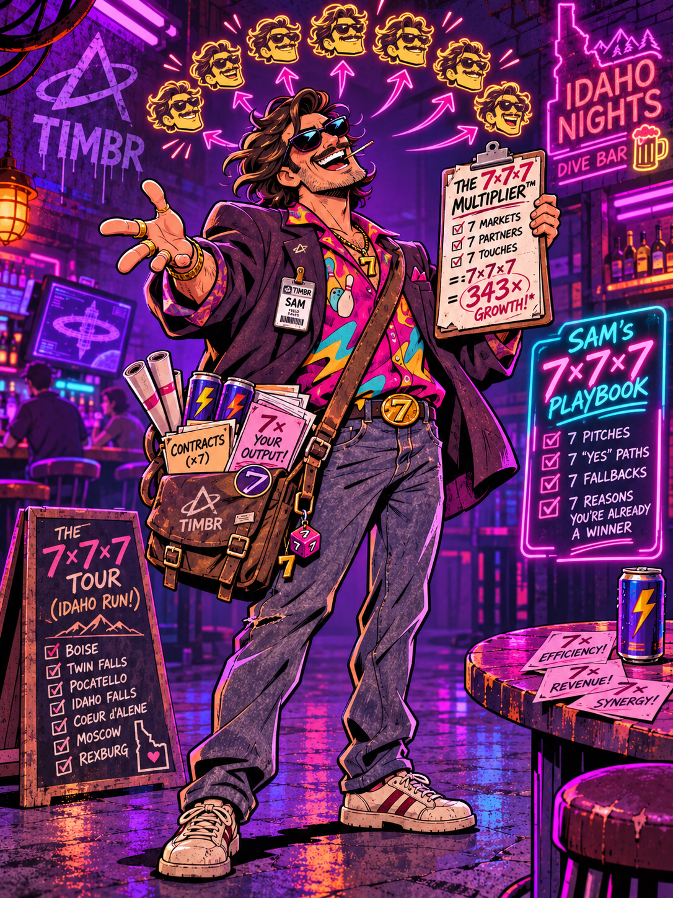
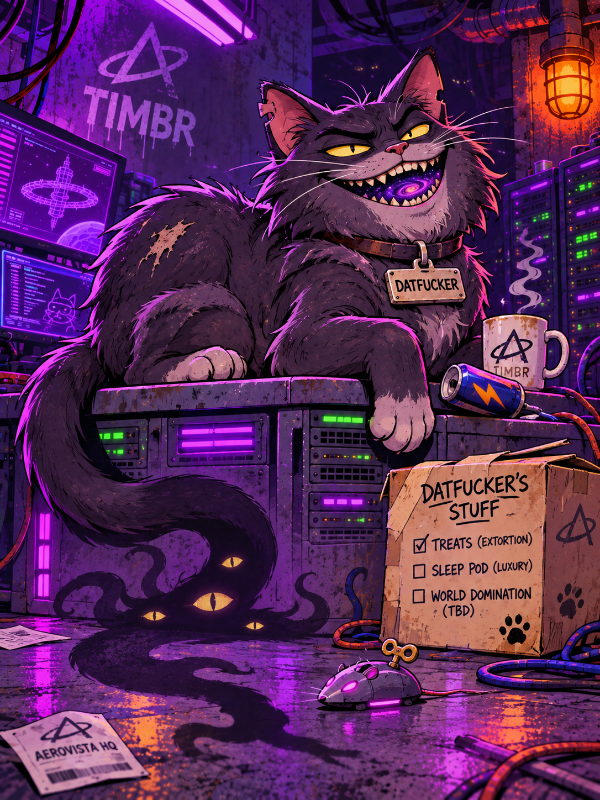
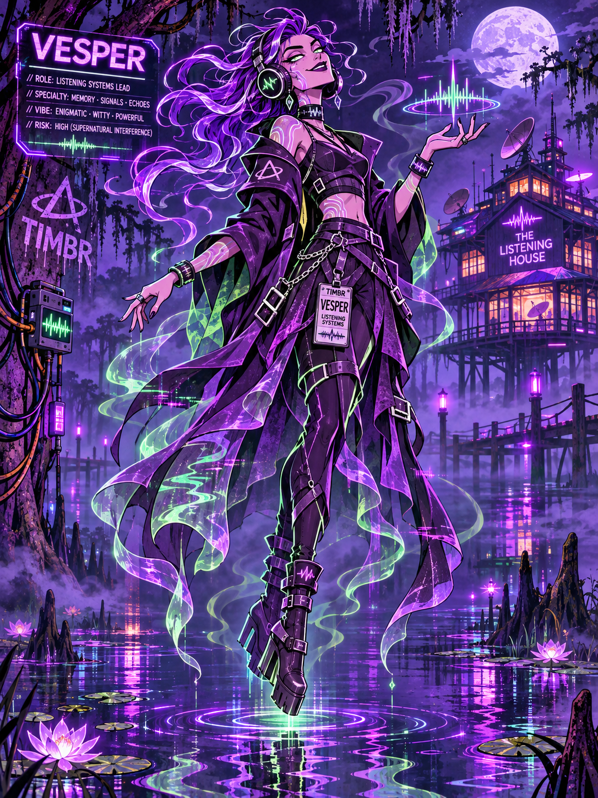

01Playable in app
Pilot: The Late Shift
Interactive pilot in the Vercel app
One server. Too many applications. Absolutely no adult supervision. The extended NXCore snapshot includes Episodes 02–05, a pilot, a year-end capsule, Boards, Bible, and Scenes. This GitHub Pages edition catalogs those materials without requiring a server.
Launch original interactive siteRecorded and archived content
Source archives are not automatically playable here. Full-size video cuts live separately on NXCore; episode scripts and application code are preserved in GitHub. The live Vercel site currently has its own independently deployed episode selection.
Interactive pilot in the Vercel app

Episode 02 / production source

Episode 03 / archived production source

Episode 04 / archived production source

Episode 05 / archived production source

Special year-end capsule / production source
A self-contained special from the 126-another folder, with its own interactive script experience.
Character Bible






The original source includes eleven character sheets, world rules, and recurring gags. Browse the complete source Bible.